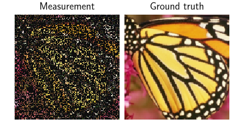
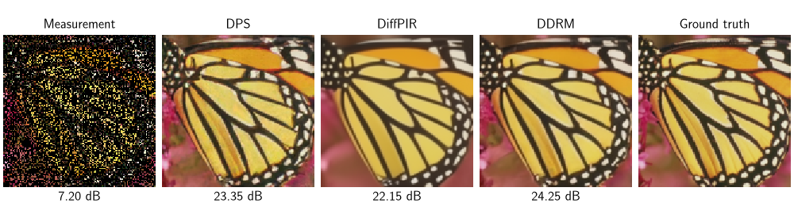
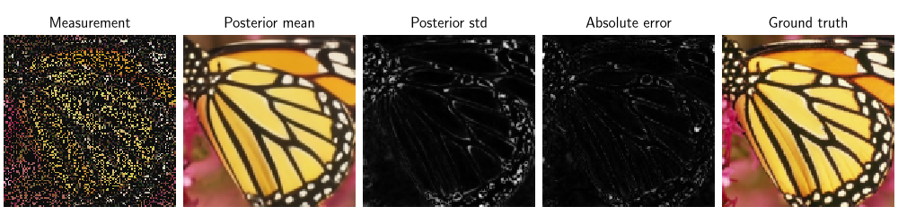
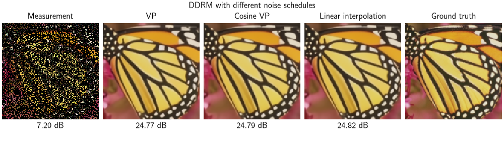
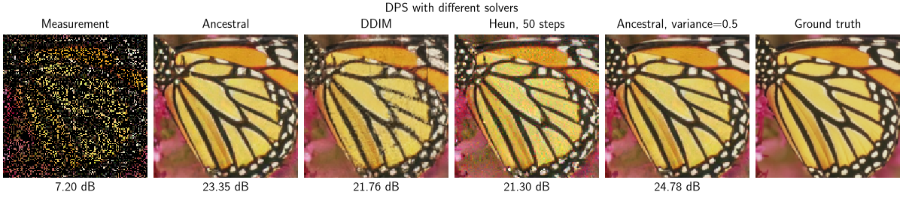
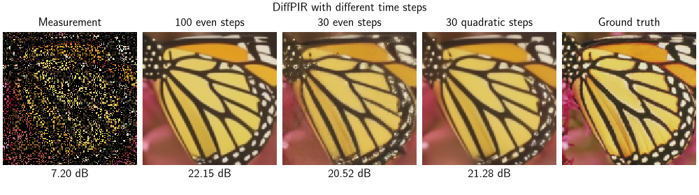

Note
New to DeepInverse? Get started with the basics with the 5 minute quickstart tutorial..
Posterior sampling with DPS, DiffPIR and DDRM#
This example compares three diffusion posterior samplers on a noisy inpainting problem:
Diffusion Posterior Sampling (DPS) Chung et al.[1], implemented in
deepinv.sampling.DPS,Diffusion PnP Image Restoration (DiffPIR) Zhu et al.[2], implemented in
deepinv.sampling.DiffPIR,Denoising Diffusion Restoration Models (DDRM) Kawar et al.[3], implemented in
deepinv.sampling.DDRM.
All three are instances of deepinv.sampling.PosteriorDiffusion. They solve the reverse-time SDE of a diffusion
model, in which the score of the prior is replaced by the score of the posterior
The first term is given by a denoiser through Tweedie’s formula. The second one is intractable, and each method
approximates it differently, with a deepinv.sampling.NoisyDataFidelity. These approximations are compared in
Noisy data-fidelity terms for diffusion posterior sampling, and
Building your diffusion posterior sampling method using SDEs shows how to assemble a custom posterior sampler.
The last section shows how to run the samplers with custom noise schedules and solvers.
Define an inverse problem#
We consider random inpainting, implemented in deepinv.physics.Inpainting, where 70% of the pixels are
masked out, with additive white Gaussian noise of standard deviation \(\sigma_y = 12.75/255\).
Note
We work with an image of size 128 x 128 to reduce the computational time of this example.
import time
import torch
import deepinv as dinv
from deepinv.utils import load_example
from deepinv.utils.plotting import plot
device = dinv.utils.get_device()
x_true = load_example(
"butterfly.png", img_size=128, device=device, resize_mode="resize"
)
physics = dinv.physics.Inpainting(
img_size=x_true.shape[1:],
mask=0.3,
pixelwise=True,
noise_model=dinv.physics.GaussianNoise(sigma=12.75 / 255.0),
device=device,
rng=torch.Generator(device).manual_seed(0),
)
y = physics(x_true, seed=0)
plot({"Measurement": y, "Ground truth": x_true})

Selected GPU 0 with 3686.25 MiB free memory
/local/pberna03/actions-runner/_work/deepinv/deepinv/deepinv/physics/noise.py:77: UserWarning: Cannot set seed for random number generator because it is not initialized. The `seed` parameter is ignored.
warnings.warn(
Load a pretrained denoiser#
The three samplers rely on a denoiser \(\denoiser{x}{\sigma}\) that can be evaluated at any noise level
\(\sigma\). We use the same pretrained DRUNet for all of them, but any denoiser taking an image and a noise
level as input works, such as the diffusion networks deepinv.models.DiffUNet or
deepinv.models.NCSNpp.
denoiser = dinv.models.DRUNet(pretrained="download").to(device)
DPS#
DPS approximates the posterior mean \(\mathbb{E}[x_0 \vert x_t]\) by the denoised estimate
\(\denoiser{x_t}{\sigma_t}\), and differentiates the measurement residual through the denoiser.
With guidance="annealed" (see deepinv.sampling.DPSDataFidelity), the likelihood score is
where \(\lambda\) is the weight parameter. It only requires a differentiable forward operator, so that
DPS also handles nonlinear problems, at the cost of a backward pass through the denoiser on each step.
The default solver is the DDPM sampler of the original paper, which works best with many steps
(num_steps=1000 in the paper). We use 100 steps to reduce the computational time.
Note
We pass a random number generator rng to each sampler, so that the samples are reproducible with
the seed argument.
dps = dinv.sampling.DPS(
denoiser,
num_steps=100,
weight=5.0,
guidance="annealed",
device=device,
rng=torch.Generator(device),
)
DiffPIR#
DiffPIR does not differentiate through the denoiser. It applies the proximal operator of a data-fidelity term \(f(\cdot, y)\) to the denoised estimate,
and plugs \(\hat{x}_0\) in Tweedie’s formula in place of the denoised estimate
(see deepinv.sampling.DiffPIRDataFidelity). Here \(f\) is the squared \(\ell_2\) distance
deepinv.optim.L2, but any data-fidelity term with a proximal operator works, such as
deepinv.optim.PoissonLikelihood. The weight parameter \(\lambda\) trades off the denoiser and the
measurements.
Each step of DiffPIR then moves to \(\hat{x}_0\) and renews a fraction zeta of the noise
(\(\zeta = 1\) by default), which is the step of deepinv.sampling.AncestralSolver with variance=zeta.
diffpir = dinv.sampling.DiffPIR(
denoiser,
data_fidelity=dinv.optim.L2(),
num_steps=100,
weight=7.0,
zeta=1.0,
device=device,
rng=torch.Generator(device),
)
DDRM#
DDRM requires a linear operator with a singular value decomposition \(A = U \Sigma V^\top\)
(deepinv.physics.DecomposablePhysics, as for inpainting) and Gaussian noise. It works in the spectral
domain: the singular components of \(x_t\) that are measured with a higher signal-to-noise ratio than the
current noise level are moved toward the measurements before denoising, and the denoised estimate is then corrected
in closed form (see deepinv.sampling.DDRMDataFidelity). As DiffPIR, it does not differentiate
through the denoiser.
The parameter eta sets the stochasticity of the sampler: each step renews a fraction
\(\zeta = \eta^2\) of the noise of the unmeasured components.
ddrm = dinv.sampling.DDRM(
denoiser,
num_steps=100,
eta=0.85,
device=device,
rng=torch.Generator(device),
)
Run the samplers#
Each call returns one sample of the posterior distribution. DPS needs gradients through the denoiser, which it
computes internally, so that all three samplers can be run in a torch.no_grad() context.
models = {"DPS": dps, "DiffPIR": diffpir, "DDRM": ddrm}
psnr = dinv.metric.PSNR()
samples = {}
for name, model in models.items():
start = time.time()
with torch.no_grad():
samples[name] = model(y, physics, seed=1)
print(
f"{name:>8s}: PSNR {psnr(samples[name], x_true).item():.2f} dB, "
f"{len(model.solver.timesteps)} steps in {time.time() - start:.1f} s"
)
plot(
{"Measurement": y, **samples, "Ground truth": x_true},
subtitles=[f"{psnr(y, x_true).item():.2f} dB"]
+ [f"{psnr(sample, x_true).item():.2f} dB" for sample in samples.values()]
+ [""],
rescale_mode="clip",
figsize=(10, 2.8),
)

DPS: PSNR 23.35 dB, 100 steps in 1.9 s
DiffPIR: PSNR 22.15 dB, 100 steps in 0.7 s
DDRM: PSNR 24.25 dB, 100 steps in 0.8 s
The three samplers recover the image from 30% of its pixels. They differ in their requirements and cost:
DPS handles any differentiable forward operator, but every step needs a backward pass through the denoiser, and it needs more steps than the other two.
DiffPIR handles any data-fidelity term with a proximal operator and needs only forward passes.
DDRM is restricted to
deepinv.physics.DecomposablePhysicswith Gaussian noise, and needs only forward passes.
Their hyperparameters (weight, zeta, eta and the number of steps) should be tuned for each problem.
Posterior mean and uncertainty#
Each run of a sampler draws a new sample of the posterior distribution. Averaging several samples estimates the
posterior mean, which is the minimum mean squared error estimator, and their spread estimates the uncertainty
of the reconstruction. deepinv.sampling.DiffusionSampler turns any of these samplers into a Monte Carlo
sampler that runs the diffusion several times and computes these statistics. We use DDRM, the fastest of the three
here, with 10 samples.
sampler = dinv.sampling.DiffusionSampler(ddrm, max_iter=10, verbose=False)
mean, var = sampler(y, physics)
print(f"Posterior mean PSNR: {psnr(mean, x_true).item():.2f} dB")
error = (mean - x_true).abs().sum(dim=1, keepdim=True) # per pixel absolute error
std = var.sum(dim=1, keepdim=True).sqrt() # per pixel standard deviation
plot(
{
"Measurement": y,
"Posterior mean": mean,
"Posterior std": std,
"Absolute error": error,
"Ground truth": x_true,
},
figsize=(10, 2.5),
)

Posterior mean PSNR: 25.65 dB
The posterior mean is smoother than a single sample and closer to the ground truth. The posterior standard deviation concentrates along the edges of the wings, where the error is also the largest.
Custom schedules and solvers#
Each sampler combines two components: the diffusion SDE, set by schedule, which defines the noise level at each
time, and the solver of the reverse-time SDE, set by solver, which defines how this SDE is discretized. Both
accept a name, which creates the component with its default parameters, or an instance, which gives full control
over it (see the user guide).
Custom noise schedules#
The schedule argument sets the diffusion SDE, whose state at time \(t\) is
\(x_t = s(t) \left(x_0 + \sigma(t) \omega\right)\) with \(\omega \sim \mathcal{N}(0, \mathrm{I})\), for a
scale \(s(t)\) and a noise level \(\sigma(t)\) (see the user guide). Besides the
strings "vp" (default) and "ve", it accepts any SDE instance:
deepinv.sampling.VariancePreservingDiffusiontakes a custom noise levelsigma_tand sets the scale \(s(t) = (1 + \sigma(t)^2)^{-1/2}\). For instance, \(\sigma(t) = \tan(\pi t / 2)\) gives the cosine schedule \(s(t) = \cos(\pi t / 2)\). Likewise,deepinv.sampling.VarianceExplodingDiffusiontakessigma_twith \(s(t) = 1\).deepinv.sampling.EDMDiffusionSDEtakes bothsigma_tandscale_t. For instance, \(s(t) = 1 - t\) and \(\sigma(t) = t / (1 - t)\) give the linear interpolation \(x_t = (1 - t) x_0 + t \omega\) of flow matching (deepinv.sampling.FlowMatching).
Both noise levels diverge at \(t = 1\), so that we stop the SDEs at \(T = 0.99\). The time derivatives of
sigma_t and scale_t are computed by autograd, so that they must be differentiable PyTorch functions of
\(t\). We run DDRM with each schedule.
schedules = {
"VP": "vp",
"Cosine VP": dinv.sampling.VariancePreservingDiffusion(
sigma_t=lambda t: torch.tan(torch.pi * t / 2), T=0.99, device=device
),
"Linear interpolation": dinv.sampling.EDMDiffusionSDE(
sigma_t=lambda t: t / (1 - t), scale_t=lambda t: 1 - t, T=0.99, device=device
),
}
schedule_samples = {}
for name, schedule in schedules.items():
model = dinv.sampling.DDRM(
denoiser,
schedule=schedule,
num_steps=100,
eta=0.95,
device=device,
rng=torch.Generator(device),
)
with torch.no_grad():
schedule_samples[name] = model(y, physics, seed=1)
plot(
{"Measurement": y, **schedule_samples, "Ground truth": x_true},
subtitles=[f"{psnr(y, x_true).item():.2f} dB"]
+ [f"{psnr(sample, x_true).item():.2f} dB" for sample in schedule_samples.values()]
+ [""],
suptitle="DDRM with different noise schedules",
rescale_mode="clip",
figsize=(10, 2.8),
)

/local/pberna03/actions-runner/_work/deepinv/deepinv/deepinv/utils/plotting.py:519: UserWarning: This figure was using a layout engine that is incompatible with subplots_adjust and/or tight_layout; not calling subplots_adjust.
fig.subplots_adjust(top=0.75)
The three schedules give a similar quality here. With the default "ancestral" solver, each step is exact in
\(x_t / s(t)\), so that the sample only depends on the noise levels \(\sigma(t)\) at the time steps, which
each schedule spreads differently over the steps. The scale \(s(t)\) only matters for the solvers "euler"
and "heun", which discretize the SDE in \(x_t\).
Custom solvers#
The solver argument accepts the names "ancestral", "ddpm", "ddim", "euler" and "heun"
(see the user guide), which create the solver with num_steps evenly spaced time steps,
or a solver instance, which is used as is, with its own time steps and random number generator. The correction of
DPS goes through the denoiser, so that DPS works with any solver. We compare the default "ancestral" solver
above, which is the DDPM sampler for the default alpha=1 (see deepinv.sampling.AncestralSolver), with:
the deterministic DDIM sampler
"ddim"(deepinv.sampling.DDIMSolver),the second-order
deepinv.sampling.HeunSolver, which evaluates the denoiser twice per step, with 50 steps to keep the same number of evaluations,deepinv.sampling.AncestralSolverwithvariance=0.5, which renews half of the noise variance on each step, as DiffPIR with \(\zeta = 0.5\).
solvers = {
"DDIM": dinv.sampling.DDIMSolver(
timesteps=torch.linspace(1.0, 0.0, 100, device=device),
eta=0,
rng=torch.Generator(device),
),
"Heun, 50 steps": dinv.sampling.HeunSolver(
timesteps=torch.linspace(1.0, 0.0, 50, device=device),
rng=torch.Generator(device),
),
"Ancestral, variance=0.5": dinv.sampling.AncestralSolver(
timesteps=torch.linspace(1.0, 0.0, 100, device=device),
variance=0.5,
rng=torch.Generator(device),
),
}
solver_samples = {"Ancestral": samples["DPS"]}
for name, solver in solvers.items():
model = dinv.sampling.DPS(
denoiser,
solver=solver,
num_steps=100,
weight=5.0,
guidance="annealed",
device=device,
rng=torch.Generator(device),
)
with torch.no_grad():
solver_samples[name] = model(y, physics, seed=1)
plot(
{"Measurement": y, **solver_samples, "Ground truth": x_true},
suptitle="DPS with different solvers",
subtitles=[f"{psnr(y, x_true).item():.2f} dB"]
+ [f"{psnr(sample, x_true).item():.2f} dB" for sample in solver_samples.values()]
+ [""],
rescale_mode="clip",
figsize=(12, 2.8),
)

/local/pberna03/actions-runner/_work/deepinv/deepinv/deepinv/utils/plotting.py:519: UserWarning: This figure was using a layout engine that is incompatible with subplots_adjust and/or tight_layout; not calling subplots_adjust.
fig.subplots_adjust(top=0.75)
All four solvers use 100 evaluations of the denoiser. The best solver depends on the problem and on the number of steps, and should be tuned with the other hyperparameters.
For example, we run DiffPIR with only 30 steps, either evenly spaced, or spaced quadratically as \(t_i = (1 - i / 29)^2\),
which visits more low noise levels. With a solver instance, the variance of the solver replaces the zeta of
DiffPIR.
u = torch.linspace(1.0, 0.0, 30, device=device)
timesteps = {"30 even steps": u, "30 quadratic steps": u**2}
timestep_samples = {"100 even steps": samples["DiffPIR"]}
for name, t in timesteps.items():
model = dinv.sampling.DiffPIR(
denoiser,
data_fidelity=dinv.optim.L2(),
solver=dinv.sampling.AncestralSolver(
timesteps=t, variance=1.0, rng=torch.Generator(device)
),
weight=7.0,
device=device,
)
with torch.no_grad():
timestep_samples[name] = model(y, physics, seed=1)
plot(
{"Measurement": y, **timestep_samples, "Ground truth": x_true},
suptitle="DiffPIR with different time steps",
subtitles=[f"{psnr(y, x_true).item():.2f} dB"]
+ [f"{psnr(sample, x_true).item():.2f} dB" for sample in timestep_samples.values()]
+ [""],
rescale_mode="clip",
figsize=(10, 2.8),
)

/local/pberna03/actions-runner/_work/deepinv/deepinv/deepinv/utils/plotting.py:519: UserWarning: This figure was using a layout engine that is incompatible with subplots_adjust and/or tight_layout; not calling subplots_adjust.
fig.subplots_adjust(top=0.75)
- References:
Total running time of the script: (0 minutes 20.850 seconds)